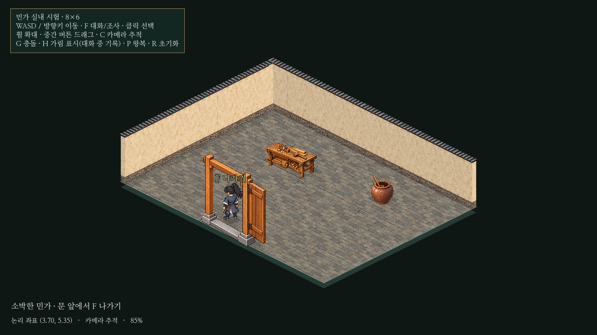

민가 출입 · 실내/외부 전환
20×16 생활 구역의 담장 없는 민가 한 동만 출입합니다.8×6 실내에서 도원9.6/NPC4.8과85% 기본 배율을 유지했습니다. 외부는 삭제하지 않고 체류 동안 정지해 NPC와 카메라 상태를 보존합니다. 본게임과 기존12×12씬은 변경하지 않았습니다.
실내 전체

기존 바닥/회벽/작업 탁자/수납 항아리 재사용 · 실내 출입문만 새로 제작실제 출입과 복귀 영상
약4.8초 실제 렌더/입력 기록. 출입문에 접근해 입장하고 실내를 걸은 뒤 같은 민가 앞으로 복귀합니다. 이어서 다시 왕복합니다. 영상 다운로드
검증
기존9검사와 새 출입 검사 모두 PASS.3회 연속 왕복·F 누름 유지·이동 입력 보호·NPC 위치/왕복 상태·수동 카메라와 배율 복원·가구 실제 충돌·가림 표식·실내 체류 중 씬 제거를 확인했습니다.
속도9.6에서는 방의6타일 한 변을 약0.63초에 지날 수 있어 세밀한 조작은 빠르게 느껴질 수 있습니다. 속도/배율은 임의로 바꾸지 않았습니다. 실내 생활 장식·문 개폐·다른 건물 출입·저장/의뢰 연결은 이번 범위가 아닙니다.
실행
기존 프로젝트에서 res://prototypes/isometric/district.tscn을 열고 F6. 아래쪽 담장 없는 민가의 문 앞(약14.61,11.56)에서 F 들어가기. 실내 문 앞에서는 F 나가기입니다.
res://prototypes/isometric/room.tscn은 실내 단독 관찰용입니다. 외부 복귀는 district에서 진입해야 합니다. 기존12×12씬은 res://prototypes/isometric/main.tscn입니다. F5는 본게임입니다.
상세 검증·구조·남은 사항